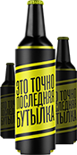
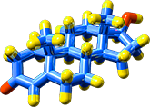
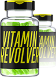
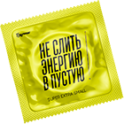
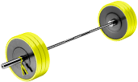
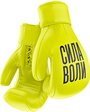
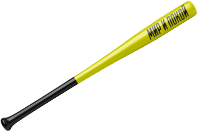

01
Выход из химического рабства
Избавляемся от вредных привычек, а также убираем зависимость от: кофе, чая, энергетиков, сладостей, вредной пищи и т.д.
Тебе станут просто не нужны подобные стимуляторы, ведь и без них ты начнешь себя чувствовать бодро и заряжено.
02
метод «НейроФАКИНГ»
Убираем страхи, деструктивные чувства и негативные установки. Учимся делать это самостоятельно и без рассказов всех своих тайн и секретов.
Я хочу, чтобы ты стал самостоятельной боевой единицей и не зависел от меня и от других спецов, когда придёт время убрать очередной баг из головы.

03
Управление гормонами
Они управляют твоим состоянием, самочувствием и настроением. Теперь ты будешь управлить ими! Ты узнаешь, за что отвечает каждый гормон и как самому регулировать баланс гормонов. Научишься включать нужное тебе состояние в режиме «Машина» или «Покой».
Без химических и медицинских препаратов

04
ВИТАМИНЫ И ПИТАНИЕ
Чем и как питаться, чтобы не чувствовать себя сонным мешком, особенно после приёма пищи?
Почему витамины из обычной еды намного полезнее и эффективнее аптечных?
На какие витамины стоит обратить внимание именно в твоей ситуации?
Эти и подобные вопросы разберём в данном модуле
05
ИЗБАВЛЕНИЕ ОТ ЛЕНИ И
ПРОКРАСТИНАЦИИ
Развеиваем мифы о мотивации.
Перестаём пинать болт. Заменяем внешнюю и негативную мотивациии «НАДО» на мотивацию «ХОЧУ».
Тебе не нужно будет себя заставлять что-то сделать – ты будешь сам этого хотеть.
06
РАБОТА С ИНФАНТИЛИЗМОМ
И КОМПЛЕКСАМИ
Взрослеем и становимся мужчинами.
Берём ответственность за свою жизнь.
Учимся достойно принимать вызовы жизни и ошибки прошлого.
07
ИДЕАЛЬНАЯ ТРАЕКТОРИЯ ЖИЗНИ
МУЖЧИНЫ ОТ А ДО Я
Определяемся, как мужчине не просрать свою жизнь. Определяемся с Целью, Планом, Временем.
Твоя Цель всегда у тебя в голове, и она тебя не тяготит или заставляет, а вдохновляет и заряжает.

08
РАБОТА С ОКРУЖЕНИЕМ
И ОТНОШЕНИЯМИ
Ты научишься грамотно позиционировать себя в отношениях с женщинами, родными и близкими.
Ты будешь строить отношения,
а не они тебя!
09
ЦИФРОВАЯ ГИГИЕНА
Ежедневное огромное количество избыточной информации угнетает и ослабляет твой мозг. Вместе с этим тебе в голову вкладываются определённые установки и стандарты поведения, которые выгодны кому угодно, но только не тебе.
Я научу тебя, как правильно избегать информационного перегруза, и не давать собой манипулировать.

10
Прокачка мозгов
Повышение когнитивных функций мозга, улучшение памяти, чтения, скорости мышления, фокуса внимания, креативности, планирования, концептуального мышления.
+3
БОНУСНЫХ
МОДУЛЯ
КАЖДЫЙ МОДУЛЬ ВАЖЕН!
Например, без управления гормонами и Нейрофакинга тебе будет тяжелее грамотно позиционировать себя в социуме и заводить знакомства с важными людьми.
В состоянии химического рабства тебе будет тяжелее похоронить свою прокрастинацию и лень.

11
Бонусный модуль
Связи и переговоры
Научишься заводить те самые полезные "СВЯЗИ" и договариваться с кем угодно и о чём угодно:
Представь, что ты пришел на стрелку между двумя вооруженными бандами, перетёр с главарями, и через 10 минут все убрали оружие и разошлись по домам - в любом месте и любом окружении контролировать ситуацию будешь ТЫ.

12
Бонусный модуль
Управление и власть
Освоишь фундамент управленческих компетенций. Научишься стратегически выходить на самый верх иерархии управления внутри любых систем.
Поймешь как устроена власть и научишься грамотно принимать власть от других.
13
Бонусный модуль
ЛИДЕРСТВО
Ты не стучишь по столу и не орешь на подчиненных, а они сами хотят следовать за тобой.
Больше пряника, меньше кнута.
Повышение эффективности всей команды любых размеров.
 02
02